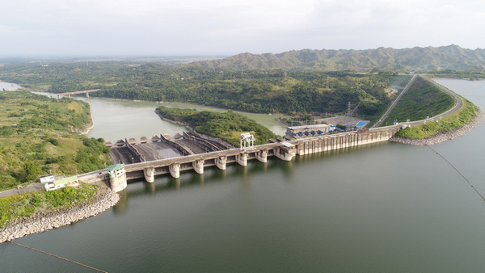
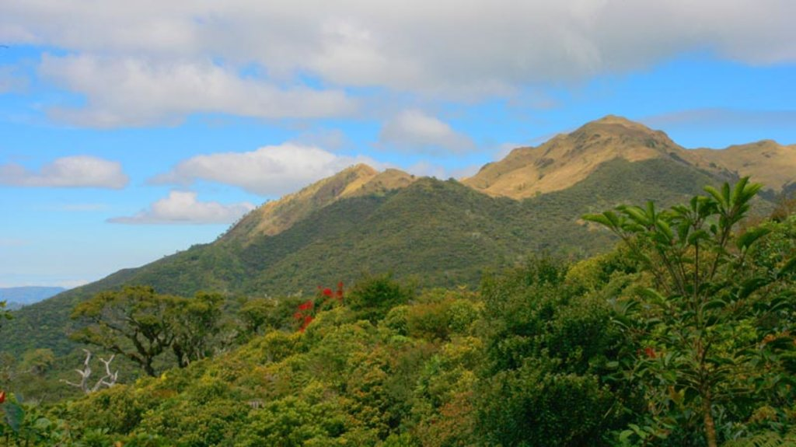
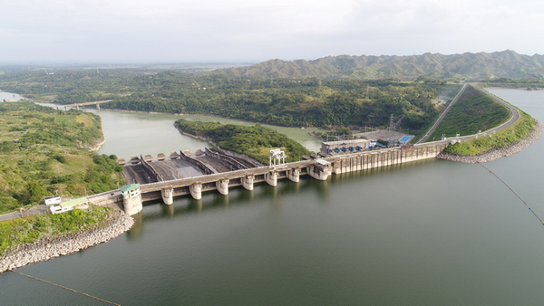
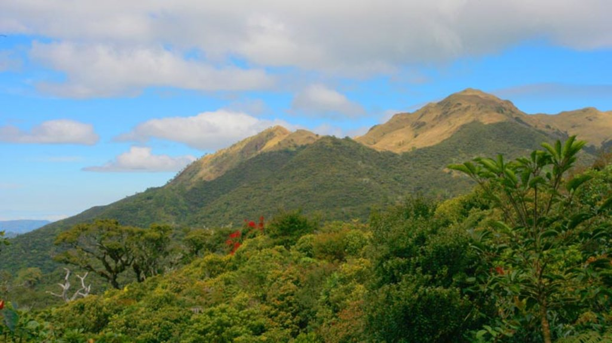
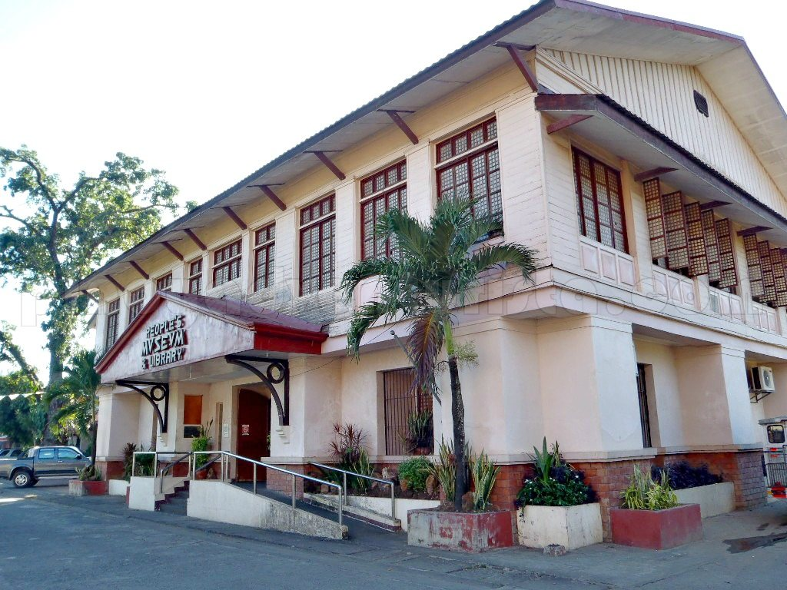
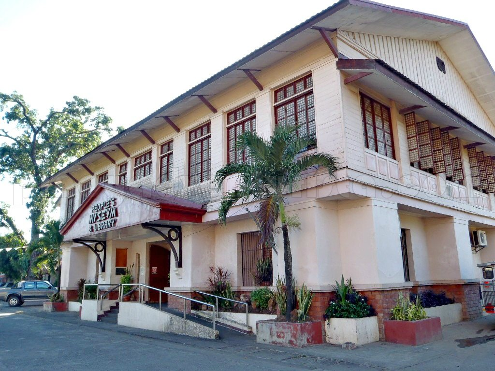
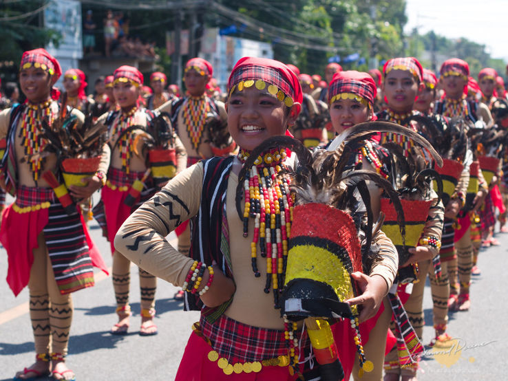
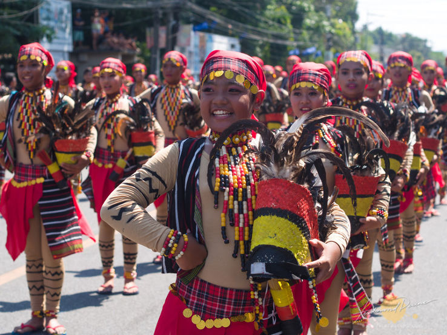

Gallery of Nueva Vizcaya
Explore the province through images that capture its natural beauty, cultural pride, and vibrant everyday life.
Nature & Landscapes

 





Food & Culture

 



People & Everyday Life

 
